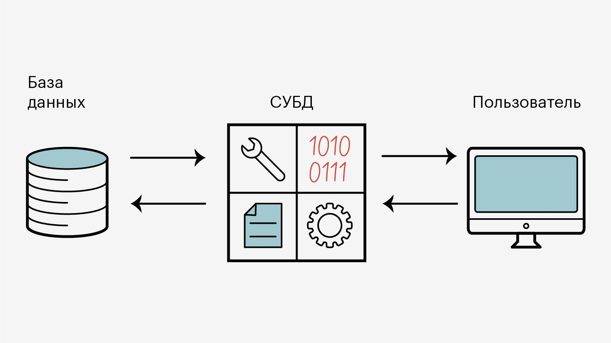

Теоретические основы организации данных и эволюция баз данных
1. Принципы обработки данных
2. Основные понятия баз данных
3. Архитектура баз данных
Эволюция вычислительных средств и информационных технологий привела к появлению качественно новых подходов к представлению, хранению и обработке данных. В настоящее время базы данных выступают ключевым элементом практически любой информационной системы, обеспечивая не только централизованное накопление информации, но и её логическую упорядоченность, а также эффективное использование в условиях одновременной работы множества пользователей. Теоретические основы данной области охватывают принципы обработки данных, систему базовых понятий и архитектурные решения, направленные на достижение независимости, целостности и адаптивности информационных структур.
Компьютеры были созданы для решения вычислительных задач, однако со временем они все чаще стали использоваться для построения систем обработки документов, а точнее, содержащейся в них информации. Такие системы обычно и называют информационными.
В истории вычислительной техники можно проследить развитие двух основных областей ее использования. Первая область — применение вычислительной техники для выполнения численных расчетов, которые слишком долго или вообще невозможно.
Информационные системы имеют следующие особенности:
— для обеспечения их работы нужны сравнительно низкие вычислительные мощности
— данные, которые они используют, имеют сложную структуру
— необходимы средства сохранения данных между последовательными запусками системы
Другими словами, информационная система требует создания в памяти ЭВМ динамически обновляемой модели внешнего мира с использованием единого хранилища - базы данных (БД).
1. Принципы обработки данных
Формирование современных методов обработки данных происходило параллельно развитию вычислительной техники. На раннем этапе, относящемся к середине XX века, вычислительные машины применялись преимущественно для решения задач численного характера. Такие задачи характеризовались сравнительно ограниченным объёмом входной информации, однако требовали выполнения сложных алгоритмических процедур. Данные при этом не выделялись в самостоятельный объект — они включались непосредственно в программный код и использовались исключительно в рамках конкретного вычислительного процесса.
Для данного периода были характерны следующие особенности:
— неразрывная связь данных с программной логикой;
— описание структуры данных непосредственно внутри программ;
— отсутствие механизмов повторного применения данных;
— размещение информации исключительно в оперативной памяти;
— отсутствие централизованных средств управления данными.
Подобная организация приводила к ряду существенных ограничений. Любая модификация структуры данных неизбежно влекла за собой необходимость изменения программных модулей, что усложняло сопровождение систем и снижало их гибкость. Кроме того, невозможность многократного использования информации существенно ограничивала эффективность вычислительных процессов.
Дальнейшее развитие вычислительных систем, особенно в 1960-е годы, обусловило переход к новому этапу, связанному с обработкой значительных массивов информации. Возникла необходимость хранения данных вне оперативной памяти, что привело к использованию внешних носителей. В этот период сформировались файловые системы, позволившие организовывать данные в виде структурированных наборов — файлов, доступ к которым осуществлялся через прикладные программы.
Несмотря на достигнутые преимущества, файловый подход оказался ограниченным. Наиболее существенные недостатки включали:
— жёсткую зависимость программных средств от структуры данных;
— избыточное дублирование информации в различных файлах;
— трудности поддержания согласованности данных;
— сложности организации параллельного доступа;
— ограниченные средства защиты информации.
Указанные проблемы обусловили необходимость перехода к новой концепции, в рамках которой данные рассматриваются как самостоятельный объект управления, не привязанный к конкретным программам. Это стало основой формирования теории баз данных.
Характерной особенностью данной области применения вычислительной техники является наличие сложных алгоритмов обработки, которые применяются к простым по структуре данным, объем которых сравнительно невелик. Вторая область – это использование средств вычислительной техники в автоматических или автоматизированных информационных системах. Информационная система представляет собой программно-аппаратный комплекс, обеспечивающий выполнение следующих функций:
1. надежное хранение информации в памяти компьютера;
2. выполнение специфических для данного приложения преобразований информации и вычислений;
3. предоставление пользователям удобного и легко осваиваемого интерфейса. Обычно такие системы имеют дело с большими объемами информации, имеющей достаточно сложную структуру.
Важным шагом в развитии именно информационных систем явился переход к использованию централизованных систем управления файлами. С точки зрения прикладной программы, файл — это именованная область внешней памяти, в которую можно записывать и из которой можно считывать данные.
Правила именования файлов, способ доступа к данным, хранящимся в файле, и структура этих данных зависят от конкретной системы управления файлами и, возможно, от типа файла. Система управления файлами берет на себя распределение внешней памяти, отображение имен файлов в соответствующие адреса во внешней памяти и обеспечение доступа к данным. Пользователи видят файл как линейную последовательность записей и могут выполнить над ним ряд стандартных операций:
— создать файл (требуемого типа и размера);
— открыть ранее созданный файл;
— прочитать из файла некоторую запись (текущую, следующую, предыдущую, первую, последнюю);
— записать в файл на место текущей записи новую, добавить новую запись в конец файла.
В разных файловых системах эти операции могли несколько отличаться, но общий смысл их был именно таким. Главное, что следует отметить, это то, что структура записи файла была известна только программе, которая с ним работала, система управления файлами не знала ее. И поэтому для того, чтобы извлечь некоторую информацию из файла, необходимо было точно знать структуру записи файла с точностью до бита.
Каждая программа, работающая с файлом, должна была иметь у себя внутри структуру данных, соответствующую структуре этого файла. Поэтому при изменении структуры файла требовалось изменять структуру программы, а это требовало новой компиляции, то есть процесса перевода программы в исполняемые машинные коды. Такая ситуация характеризовалась как зависимость программ от данных. Для информационных систем характерным является наличие большого числа различных пользователей (программ), каждый из которых имеет свои специфические алгоритмы обработки информации, хранящейся в одних и тех же файлах.
Изменение структуры файла, которое было необходимо для одной программы, требовало исправления и перекомпиляции, и дополнительной отладки всех остальных программ, работающих с этим же файлом. Это было первым существенным недостатком файловых систем, который явился толчком к созданию новых систем хранения и управления информацией. Поскольку файловые системы являются общим хранилищем файлов, принадлежащих, вообще говоря, разным пользователям, системы управления файлами должны обеспечивать авторизацию доступа к файлам. В общем виде подход состоит в том, что по отношению к каждому зарегистрированному пользователю данной вычислительной системы для каждого существующего файла указываются действия, которые разрешены или запрещены данному пользователю. И отсутствие централизованных методов управления доступом к информации послужило еще одной причиной разработки СУБД. Следующей причиной стала необходимость обеспечения эффективной параллельной работы многих пользователей с одними и теми же файлами.
В общем случае системы управления файлами обеспечивали режим многопользовательского доступа. Если операционная система поддерживает многопользовательский режим, вполне реальна ситуация, когда два или более пользователя одновременно пытаются работать с одним и тем же файлом. Если все пользователи собираются только читать файл, ничего страшного не произойдет.
Но если хотя бы один из них будет изменять файл, для корректной работы этих пользователей требуется взаимная синхронизация их действий по отношению к файлу. В системах управления файлами обычно применялся следующий подход. В операции открытия файла (первой и обязательной операции, с которой должен начинаться сеанс работы с файлом) среди прочих параметров указывался режим работы (чтение или изменение).
Если к моменту выполнения этой операции некоторым пользовательским процессом PR1 файл был уже открыт другим процессом PR2 в режиме изменения, то в зависимости от особенностей системы процессу PR1 либо сообщалось о невозможности открытия файла, либо он блокировался до тех пор, пока в процессе PR2 не выполнялась операция закрытия файла.
При подобном способе организации одновременная работа нескольких пользователей, связанная с модификацией данных в файле, либо вообще не реализовывалась, либо была очень замедлена. Эти недостатки послужили тем толчком, который заставил разработчиков информационных систем предложить новый подход к управлению информацией.
2. Основные понятия баз данных
В современной теории баз данных ключевым является различие между понятиями «данные» и «информация». Под данными понимаются формализованные значения, фиксирующие характеристики объектов или процессов. Однако сами по себе они не несут смысловой нагрузки. Значение возникает только в процессе интерпретации, когда данные используются в определённом контексте.
Таким образом, можно выделить следующие определения:
— данные – это зафиксированные значения, пригодные для хранения и обработки;
— информация – это результат осмысления данных, имеющий практическое значение.

Для иллюстрации можно привести простой пример: числовое значение само по себе не является информативным, однако в зависимости от контекста оно может обозначать количество, стоимость или идентификатор.
Организация данных осуществляется на основе базовых структурных элементов:
— поле – минимальная единица хранения, представляющая отдельное значение;
— запись – совокупность полей, характеризующая конкретный объект;
— файл – набор однотипных записей.
Так, запись о некоторой операции может включать идентификатор, наименование, количественные показатели, временные характеристики и другие параметры, которые в совокупности формируют осмысленное представление.
База данных представляет собой организованную совокупность взаимосвязанных данных, отражающих структуру и состояние предметной области. К числу её ключевых свойств относятся:
— снижение уровня избыточности;
— логическая упорядоченность;
— независимость от прикладного программного обеспечения;
— возможность многократного использования;
— обеспечение целостности данных.
Процесс подготовки данных к размещению в базе включает несколько последовательных действий:
— формализацию исходной информации;
— сбор и накопление данных;
— преобразование их в машинно-ориентированный формат;
— загрузку в систему хранения.
Обработка данных, в свою очередь, представляет собой совокупность операций, направленных на изменение их состояния или формы представления. Основные виды операций включают:
1. ввод и регистрацию данных;
2. выборку по заданным условиям;
3. модификацию структуры и содержания;
4. перемещение между различными хранилищами;
5. вывод результатов.
Таким образом, база данных выступает как основа функционирования информационной системы, обеспечивая хранение и обработку информации в рамках заданных правил.
3. Архитектура баз данных
Одним из ключевых этапов развития теории баз данных стало формирование архитектурных принципов их построения. Наиболее распространённой является трёхуровневая модель, предусматривающая разделение представлений данных.
В рамках данной архитектуры выделяются три уровня:
— внешний;
— концептуальный;
— физический.
Внешний уровень отражает индивидуальные представления пользователей. Каждое представление формируется с учётом задач конкретного пользователя или группы пользователей и включает только необходимую часть данных.
Концептуальный уровень представляет собой обобщённую логическую модель всей базы данных. Он включает описание:
— объектов предметной области;
— их характеристик;
— взаимосвязей между объектами;
— ограничений целостности.
Физический уровень связан с конкретной реализацией хранения данных и включает:
— организацию файловых структур;
— методы доступа к информации;
— использование индексов;
— способы размещения данных на носителях.
Разделение на уровни позволяет реализовать принцип независимости данных. Различают два его вида:
— логическую независимость, обеспечивающую возможность изменения структуры данных без влияния на пользовательские представления;
— физическую независимость, позволяющую изменять способы хранения без изменения логической модели.
Такая архитектура делает систему более гибкой и упрощает её развитие.
Развитие теории баз данных привело к появлению специализированных программных средств — систем управления базами данных. Эти системы обеспечивают централизованное управление данными и выполняют широкий спектр функций:
— формирование структуры базы данных;
— управление доступом пользователей;
— выполнение запросов к данным;
— поддержание целостности;
— обработку транзакций;
— обеспечение безопасности информации.
СУБД выполняет роль промежуточного звена между пользователем и данными, обеспечивая их согласованное и безопасное использование.
Особое значение имеет механизм транзакций. Транзакция представляет собой завершённую последовательность операций, выполняемую как единое целое. Её свойства включают:
— атомарность;
— согласованность;
— изолированность;
— надёжность.
Применение транзакций позволяет гарантировать корректность данных даже при одновременной работе нескольких пользователей или при возникновении сбоев.
Таким образом, развитие методов обработки данных отражает переход от программно-зависимых структур к централизованным системам хранения информации. Введение концепции баз данных позволило повысить эффективность использования информации, снизить её избыточность и обеспечить согласованность данных.
Рассмотренные принципы обработки, понятийный аппарат и архитектурные решения формируют основу для дальнейшего изучения дисциплины. Освоение этих положений необходимо для понимания процессов проектирования и эксплуатации баз данных.
В рамках данной лекции были подробно изучены базовые принципы построения и функционирования систем баз данных, формирующие методологическую основу современных информационных технологий. Рассмотрение исторического развития способов хранения и обработки сведений позволило проследить постепенный переход от ранних моделей, в которых программы были напрямую связаны со структурой данных, к централизованным механизмам управления информационными ресурсами на базе СУБД. Анализ показал, что именно недостатки файлового подхода — избыточное дублирование информации, высокая зависимость прикладных программ от формата хранения, появление противоречий в данных и ограниченная поддержка совместной работы пользователей — стали причиной формирования новой концепции организации данных.
Изучение ключевых терминов, таких как данные, информация, запись, поле, файл и база данных, создаёт необходимую понятийную основу для дальнейшего освоения дисциплины. Особое значение имеет рассмотрение трёхуровневой архитектуры баз данных, включающей внешний, концептуальный и физический уровни. Подобная структура обеспечивает разделение представлений о данных и способов их хранения, благодаря чему достигается независимость логической модели от физической реализации. Это, в свою очередь, повышает гибкость системы, упрощает её адаптацию к изменениям предметной области и облегчает масштабирование информационной инфраструктуры.
Следовательно, рассмотренные в лекции архитектурные подходы, терминологическая система и принципы обработки информации имеют не только теоретическую, но и практическую значимость. Они выступают в качестве действующего фундамента, на котором строятся современные информационные решения. Осмысление данных положений необходимо для корректного проектирования баз данных, их эффективного сопровождения и дальнейшего совершенствования. Кроме того, усвоение представленного материала подготавливает основу для перехода к изучению моделей данных, языков работы с информацией, включая SQL, а также вопросов администрирования и практической эксплуатации систем управления базами данных.
Контрольные вопросы по лекции
1. Какие основные проблемы существовали в файловых системах и как каждая последующая модель данных пыталась их преодолеть.
2. Дайте определение базы данных в профессиональном контексте.
3. В чём заключаются ключевые отличия объектно-ориентированной модели от реляционной, и какое новое явление в начале 2000-х годов представляет собой документ-ориентированная модель?
4. Назовите два главных недостатка сетевой модели данных, связанных со сложностью схемы и разработки приложений
5. Какой недостаток реляционных СУБД устраняет документ-ориентированный подход.